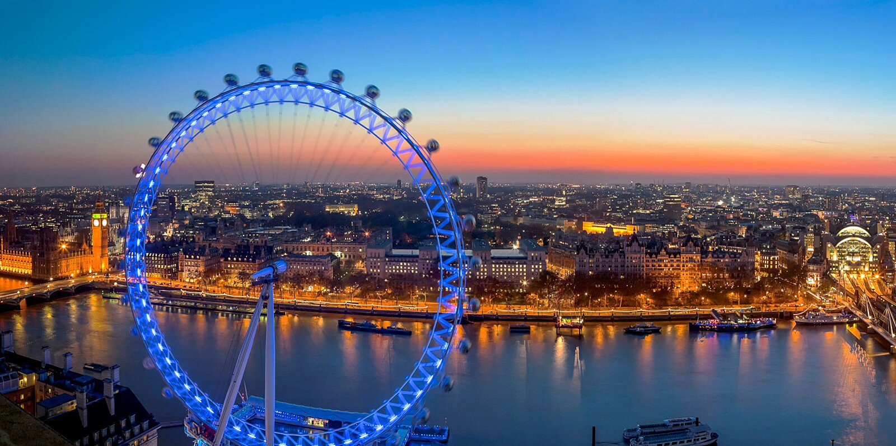
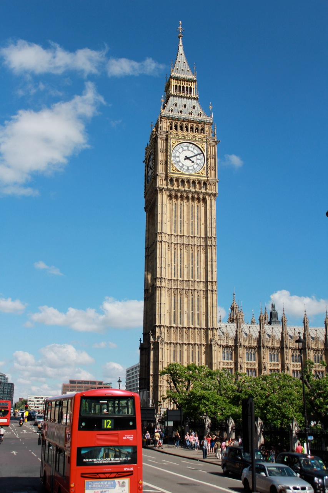
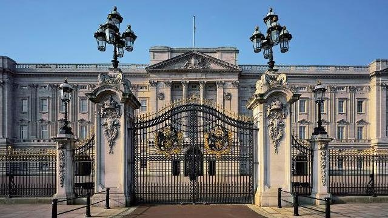
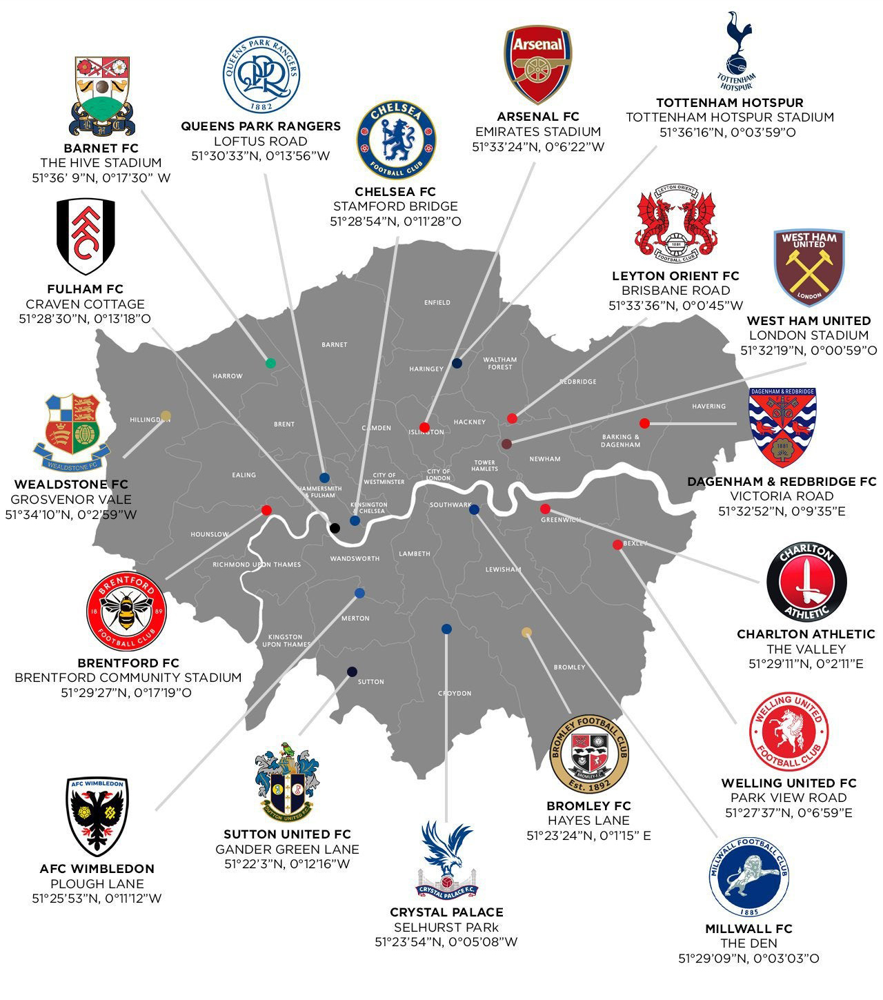
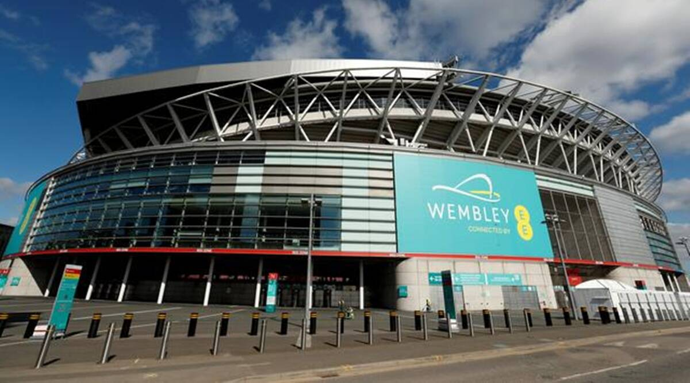

Introduction
London is capital of England that is the home to many performing art centers and tourist attractions. Some of the attractions London has to offer are:
- The London Eye

The London Eye is a ferris wheel that has become a very popular tourist, allowing tourists to oversee the city - Big Ben

Big Ben is a clock tower which stands at the north end of the Palace of Westminster- The London Theatres
- The Performing Arts Centers of London
- Buckingham Palace

Home of the Monarch and the Royal Family- Home to Many Premier League Football Teams

- Wembley Stadium

Wembley Stadium is the most famous stadium for live events
and home to the English National Team
City Data Highlights
- Population:8.982 Million
- Geographic Size: 607 Square Miles
- Weather:
Summer (48-64oF)
Winter (36-45oF)
References